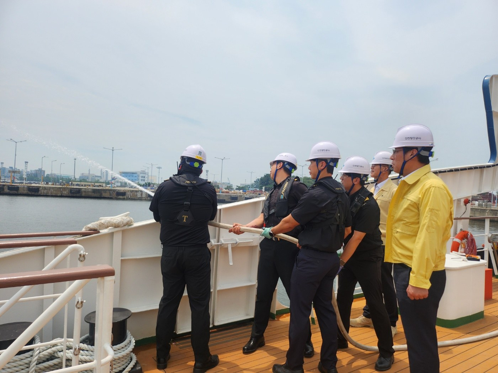
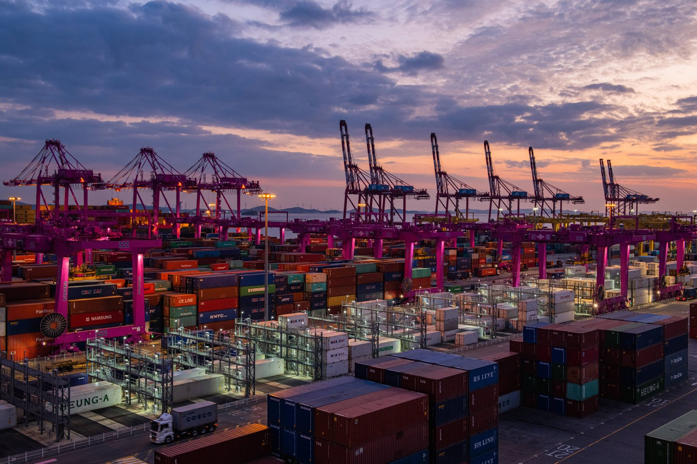

[인천항 복합물류④] 해운 탄소값 걸린 IMO 특별회기 12월 4일 재개 예정, 유럽은 2025년 배출량 70%만큼 배출권 거둬
IMO, 2008년 대비 2030년 최소 20%·2040년 최소 70%
인천항 육상전원 사용량 2024년 6.25GWh, SNCT 2028년 야드트랙터 전량 전기화 목표
AI경제저널=김갑봉 기자 | 국제해사기구(IMO)는 11월 30일 해양환경보호위원회 85차 회의를 연다. 국제해운 탄소에 값을 매기는 넷제로 프레임워크 채택 여부는 이 회의 논의 결과에 따라 12월 4일 다시 열릴 특별회기에서 다룬다. 인천항 부두의 탄소 감축 현황도 함께 사실로 짚는다.
2030년 최소 20%·2040년 최소 70%
IMO는 2023년 7월 7일 선박 온실가스 감축전략을 고쳐 채택했다. 2018년 첫 전략은 2050년까지 2008년 대비 배출을 최소 절반 줄이는 것이었다. 고친 전략의 목표는 2050년 무렵 국제해운 순배출을 0으로 만드는 것이다.
중간 점검 목표도 있다. 2008년 대비 2030년까지 최소 20%, 2040년까지 최소 70%를 줄인다. 지향점은 각각 30%와 80%다.
전략은 운송 작업 한 단위당 이산화탄소 배출인 탄소집약도를 2030년까지 2008년보다 최소 40% 낮추기로 했다.
2030년 국제해운이 쓰는 에너지의 최소 5%를 온실가스 무배출·준무배출 기술과 연료로 채우고 10%를 지향한다.
전략은 목표를 이룰 중기 조치를 마련하기로 했다. 유엔기후변화협약 지침상 국제 항해 연료 배출은 국가 총량에서 빼고 따로 보고한다.
넷제로 안, 기준 넘긴 배에 비용
그 중기 조치가 넷제로 프레임워크(Net-Zero Framework, 순배출 0 규제체계)다. IMO는 2025년 4월 해양환경보호위원회 83차에서 이 안을 승인했다. 대상은 국제해운 이산화탄소 배출의 85%를 내는 5000총톤 이상 외항선이다.
안은 배마다 해마다 연료 온실가스 집약도를 재게 한다. 연료를 만들 때부터 배에서 태울 때까지 전 과정 배출을 센다.
기준은 기본 목표와 직접 준수 목표 두 단계다. 기준을 넘긴 배는 보정 단위(remedial units)를 확보해야 한다. 구매 대금은 IMO 넷제로 기금에 들어가게 돼 있다.
2025년 10월 특별회기는 1년 휴회를 결정했다. 2026년 5월 1일 끝난 84차 회의는 회기간 실무그룹을 꾸려 회원국 수정안을 더 받기로 했다. 실무그룹은 11월 23일부터 27일까지 다시 모인다.
유럽은 2025년 배출량 70% 배출권 거둬
유럽연합은 자체 규정을 먼저 시행했다. 2024년 선박을 배출권거래제에 넣었고 선사가 내야 할 배출권은 2027년까지 단계적으로 늘어난다. 2025년에는 2024년 배출량의 40%, 2026년에는 2025년 배출량의 70%만큼 내야 했다. 2027년부터는 100%다.
유럽연합 해운연료 규정(FuelEU Maritime)은 선박 에너지 온실가스 집약도를 2025년부터 2020년 기준값보다 2% 낮추게 했다. 기준값은 메가줄당 이산화탄소 환산 91.16g이다. 국적과 관계없이 유럽 항만에 들르는 5000총톤 이상 선박에 적용된다.
이산화탄소뿐 아니라 메탄과 아산화질소도 센다. 감축 폭은 2030년 6%, 2035년 14.5%로 커져 2050년 80%에 이른다.
국내 수송 감축목표 60.2~62.8%
국내 복합운송과 국제 복합운송은 탄소 규제 틀이 다르다. 국내 운송 배출은 국가 감축목표에 잡힌다.
2050 탄소중립녹색성장위원회는 2025년 11월 10일 2035 국가 온실가스 감축목표를 의결했다. 정부는 이튿날 국무회의에서 확정했다.
2018년 순배출량 7억4230만톤 대비 53~61%를 줄이고, 수송 부문은 60.2~62.8%를 줄인다. 53% 안을 기준으로 2024년부터 2035년까지 수송 부문 연평균 감축률은 7.9%다.
기후에너지환경부가 제시한 수송 감축 수단은 전기·수소차 보급, 내연차 연비 개선, 대중교통 활성화 등이다.
앞선 2030 목표는 수송 배출을 2018년 9810만톤에서 6100만톤으로 37.8% 줄이는 것이다. 산정 기준은 2035 목표와 다르다.
화물을 도로에서 철도나 바다로 옮기는 모달시프트(modal shift, 운송수단 전환) 효과를 잰 연구가 있다. 2003년 한국해양연구원 김상현·고창두가 경인지역과 부산항 사이 수출입 컨테이너를 분석했다. 로로선(RO-RO, 차량째 싣는 배) 연안운송으로 옮기는 경우다. 이산화탄소는 줄이고 질소산화물은 크게 줄이지 못한다는 결론이다.
인천항 육상전원과 전기 야드트랙터
정박한 배는 자체 유류 발전기로 전기를 만든다.
인천항만공사는 육상전원공급설비(AMP, Alternative Maritime Power)를 저압 68곳, 고압 3곳에 갖췄다. 공사 설명으로는 선박 자체 발전보다 이산화탄소가 40% 준다. 사용량은 2023년 5.42GWh에서 2024년 6.25GWh로 15% 늘었다.

공사 홍보선 에코누리호는 액화천연가스(LNG)를 연료로 쓴다. 공사 설명으로는 이 배가 디젤선보다 이산화탄소를 약 23% 덜 낸다.
배에서 내린 컨테이너는 야드트랙터(yard tractor, 부두 운반차)가 옮긴다. 공사는 2025년 1월 선광신컨테이너터미널(SNCT)이 그해 상반기 전기 야드트랙터 13대를 들인다고 밝혔다. 같은 자료가 밝힌 SNCT 목표는 2028년까지 전량 전기화다.
공사는 2025년 12월 전기 야드트랙터 충전소 설치 신청 주체가 분명하지 않아 사업이 늦어졌다고 밝혔다. 책임 구조를 정해 인천신항에 국내 첫 전용 충전소 운영 기반을 마련했다고 했다.

공사의 인천항 탄소중립 전략체계 목표는 2035년 온실가스를 배출전망치(BAU, business as usual) 대비 50% 줄이는 것이다.
참고문헌
공식 발표자료와 공공기록
- 국제해사기구(IMO), "Resolution MEPC.377(80) 2023 IMO Strategy on Reduction of GHG Emissions from Ships", 2023년 7월 7일. https://wwwcdn.imo.org/localresources/en/MediaCentre/PressBriefings/Documents/Clean%20version%20of%20Annex%201.pdf
- 국제해사기구(IMO), "Resolution MEPC.304(72) Initial IMO Strategy on Reduction of GHG Emissions from Ships", 2018년 4월 13일. https://wwwcdn.imo.org/localresources/en/OurWork/Environment/Documents/ResolutionMEPC.304(72)_E.pdf
- 국제해사기구(IMO), "IMO approves net-zero regulations for global shipping", 2025년 4월. https://www.imo.org/en/mediacentre/pressbriefings/pages/imo-approves-netzero-regulations.aspx
- 국제해사기구(IMO), "IMO net-zero shipping talks to resume in 2026", 2025년 10월. https://www.imo.org/en/mediacentre/pressbriefings/pages/imo-net-zero-shipping-talks-to-resume-in-2026.aspx
- 국제해사기구(IMO), "Marine Environment Protection Committee “back on track” towards consensus on global shipping emissions", 2026년 5월 1일. https://www.imo.org/en/mediacentre/pressbriefings/pages/imo-progresses-work-on-ship-emissions-pollution-and-ocean-protection.aspx
- 국제해사기구(IMO), "Intersessional Working Group on GHG emissions from ships meets in London 1-4 September", 2026년 9월 1일. https://imo-newsroom.prgloo.com/news/intersessional-working-group-on-ghg-emissions-from-ships-meets-in-london-1-4-september
- 유럽연합 집행위원회 기후행동총국, "Reducing emissions from the shipping sector", 2026년 11월 7일 열람. https://climate.ec.europa.eu/areas-action/transport-decarbonisation/reducing-emissions-shipping-sector_en
- 유럽연합 집행위원회 모빌리티·운송총국, "Decarbonising maritime transport – FuelEU Maritime", 2026년 11월 7일 열람. https://transport.ec.europa.eu/transport-modes/maritime/decarbonising-maritime-transport-fueleu-maritime_en
- 유럽연합 청정수소파트너십 수소관측소, "FuelEU Maritime", 2026년 9월 2일 갱신. https://observatory.clean-hydrogen.europa.eu/eu-policy/fueleu-maritime
- 유엔기후변화협약(UNFCCC), "Emissions from fuels used for international aviation and maritime transport", 2026년 11월 7일 열람. https://unfccc.int/topics/mitigation/workstreams/emissions-from-international-transport-bunker-fuels
- 기후에너지환경부, "'35년까지 18년 대비 온실가스 53%~61% 감축", 2025년 11월 10일. https://mcee.go.kr/home/web/board/read.do?boardId=1818900&boardMasterId=939&menuId=10598
- 기후에너지환경부, "2035 국가 온실가스 감축목표 및 제4기 배출권거래제 할당계획, 국무회의서 확정", 2025년 11월 11일. https://www.korea.kr/briefing/pressReleaseView.do?newsId=156727601
- 국가기후위기대응위원회(옛 2050 탄소중립녹색성장위원회), 「2030 국가 온실가스 감축목표(NDC)」, 2026년 11월 7일 열람. https://www.2050cnc.go.kr/base/contents/view?contentsNo=59&menuLevel=2&menuNo=109
- 인천항만공사, 「환경경영 성과 – 항만 오염물질 저감」, 2026년 11월 7일 열람. https://www.icpa.or.kr/content/view.do?menuKey=3659&contentKey=1035
- 인천항만공사, 「ESG 경영 주요 추진실적 – 2024년」, 2026년 11월 7일 열람. https://www.icpa.or.kr/content/view.do?menuKey=3963&contentKey=1105
- 인천항만공사, "인천항, 전기 야드트랙터 도입으로 고효율·친환경 항만 발돋움", 2025년 1월 7일. https://www.icpa.or.kr/article/view.do?articleKey=29203&boardKey=217&menuKey=3996
- 인천항만공사, "인천항만공사, 해양수산부 '항만물류산업 혁신대회' 최우수상 수상", 2025년 12월 8일. https://www.icpa.or.kr/article/view.do?articleKey=31282&boardKey=217&menuKey=3996
- 인천항만공사, "인천항만공사 홍보선 에코누리호, 해양수산부 『친환경선박 인증』 획득", 2026년 3월 17일. https://www.icpa.or.kr/article/view.do?articleKey=31831&boardKey=217&menuKey=3996
- 인천항만공사, "인천항 THE NET-ZERO GAME CHANGER(탄소중립 전략체계), 국제항만협회 지속가능 어워드 결선 진출", 2024년 9월 10일. https://www.icpa.or.kr/article/view.do?articleKey=28497&boardKey=217&menuKey=400
연구보고서와 논문
- 김상현·고창두, "RORO선을 이용한 수출입컨테이너화물의 연안운송에 의한 온실가스 배출량 삭감에 관한 연구", 『한국해양환경·에너지학회지』 6(3), 2003년, 16-25쪽. https://koreascience.kr/article/JAKO200316610486966.page
사진 출처
- [사진1] 인천항만공사, 보도자료 "인천항만공사, 에코누리호 비상 상황 대비 훈련 실시" 첨부 「(사진3) 인천항만공사 에코누리호 선원들이 해상 화재진압훈련을 하고 있다.jpg」, 2025년 7월 31일, 공공누리 표시 없음. https://www.icpa.or.kr/article/view.do?articleKey=30623&boardKey=217&menuKey=3996
- [사진2] 인천항만공사, 보도자료 "인천항, 전기 야드트랙터 도입으로 고효율·친환경 항만 발돋움" 첨부 「(사진) 인천 신항(한진, 선광) 컨테이너 터미널.jpg」, 2025년 1월 7일 배포, 촬영일 미상, 공공누리 표시 없음. https://www.icpa.or.kr/article/view.do?articleKey=29203&boardKey=217&menuKey=3996
관련기사
- [인천항 복합물류③] 운송인은 하나인데 배상 잣대는 구간마다, 18년째 발효 못 한 로테르담 규칙
- [인천항 복합물류②] 인천항을 나서는 화물은 모두 트럭에 오른다
- [인천항 복합물류①] 서류 한 장이 배와 철도와 트럭을 묶는다
- 세계 최초 1만톤 전기 컨테이너선 中 상업 운항… 인천항 피더는
저작권자 © AI경제저널 무단전재 및 재배포, AI학습 및 활용 금지